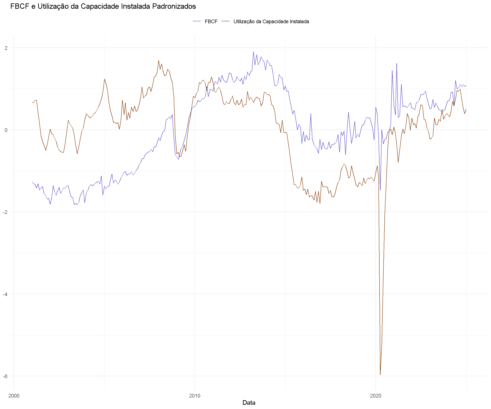
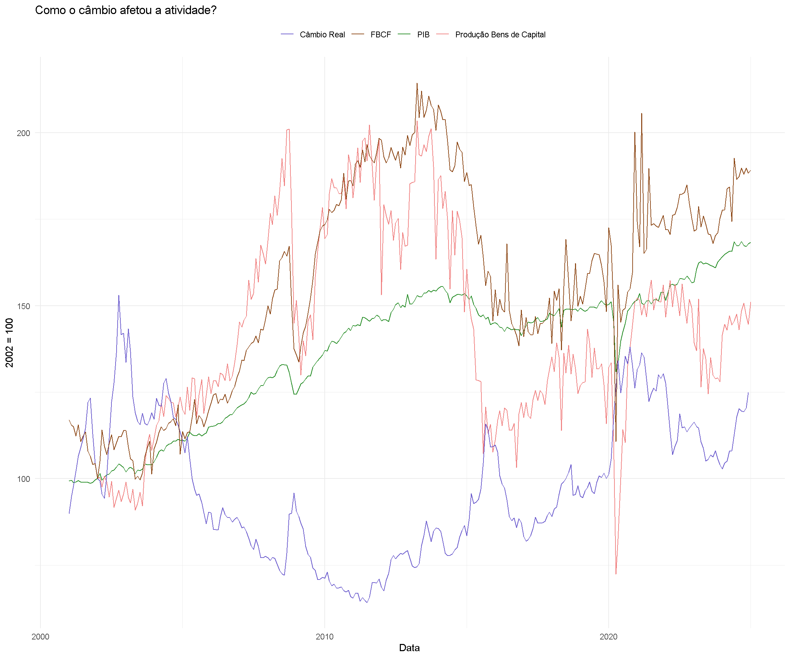
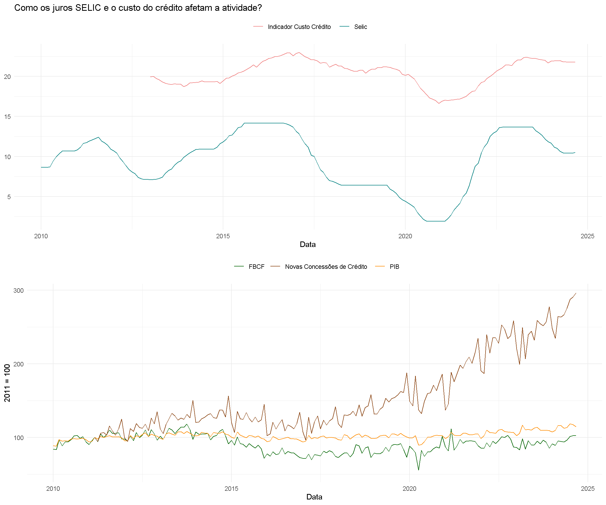
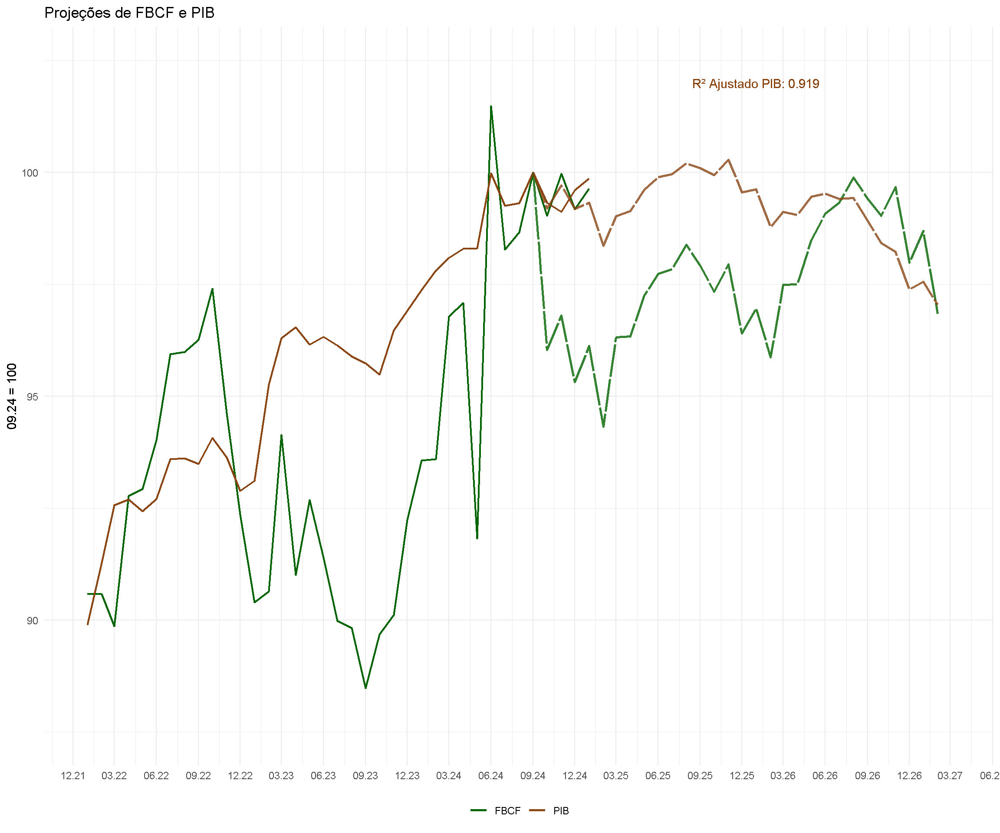

Análise do PIB Brasileiro: Investimento
ANÁLISE DE VARIÁVEIS MACROECONÔMICAS DO BRASIL: INVESTIMENTO
Observa-se que as duas séries possuem movimentos relativamente sincronizados - a correlação ecnonctrada foi de 0,777, especialmente em períodos de expansão e contração econômica. Quando a Utilização da Capacidade Instalada (UCI) aumenta, indicando maior uso das plantas produtivas e uma economia aquecida, verifica-se que a FBCF também tende a crescer, refletindo um ambiente favorável para investimentos em capital fixo. Isso ocorre porque o aumento do uso da capacidade produtiva sinaliza a necessidade de novos investimentos para evitar gargalos e expandir a capacidade de produção.
Por outro lado, nos períodos de queda significativa da UCI, como observado durante a crise econômica de 2015-2016 e a pandemia de 2020, a FBCF também apresentou reduções acentuadas, sugerindo que em cenários de ociosidade elevada, o incentivo para novos investimentos diminui drasticamente. Durante a pandemia, o gráfico destaca um mergulho acentuado na FBCF, muito mais profundo do que a queda na UCI, refletindo o impacto abrupto do choque econômico sobre a confiança dos investidores.
Além disso, nos períodos de recuperação econômica, as duas variáveis voltam a convergir em uma tendência de alta, embora a FBCF apresente certa defasagem em relação à Utilização da Capacidade Instalada. Isso pode ser explicado pelo tempo necessário para que as decisões de investimento sejam tomadas e implementadas, o que é característico dos movimentos cíclicos de investimento.
Implicações Econômicas
A relação observada no gráfico é consistente com a teoria econômica: o aumento na utilização da capacidade produtiva geralmente antecede um aumento nos investimentos, uma vez que a demanda crescente pressiona a capacidade existente, levando as empresas a expandirem seus ativos fixos. Por outro lado, em momentos de ociosidade elevada, como durante recessões, a FBCF tende a se retrair, uma vez que as empresas reduzem investimentos devido à baixa demanda e incertezas econômicas.

O gráfico apresentado mostra a relação entre o câmbio real, a Formação Bruta de Capital Fixo (FBCF), o PIB e a produção de bens de capital ao longo do tempo, destacando como as variações cambiais influenciam a atividade econômica e os investimentos no Brasil. A trajetória do câmbio real, representada pela linha azul, revela movimentos significativos de valorização e desvalorização ao longo do período, especialmente em momentos de crise, refletindo a volatilidade típica da economia brasileira. Esse comportamento tem impacto direto sobre os investimentos em capital fixo e a produção industrial, evidenciando a interdependência entre as variáveis.
Observa-se que durante períodos de valorização cambial, como no início dos anos 2000 e meados da década, há um crescimento mais expressivo da FBCF e do PIB. Esse movimento sugere que a valorização do real criou um ambiente mais favorável aos investimentos, em grande parte devido à redução do custo de importação de bens de capital e insumos essenciais para a expansão da capacidade produtiva. A produção de bens de capital também apresentou um comportamento alinhado, respondendo positivamente à melhora nas condições econômicas e ao incentivo ao investimento. Enquanto a correlação entre FBCF e PIB é de 0,865, e entre FBCF e Bens de Capital é de 0,777, a correlação entre Bens de Capital e Câmbio é negativa, com valor de -0.647.
No entanto, a partir de 2014-2016, a desvalorização acentuada do câmbio, combinada com a recessão econômica, resultou em uma retração sincronizada da produção de bens de capital, da FBCF e do PIB. A desvalorização cambial, embora beneficie setores exportadores no curto prazo, encarece os insumos importados e os equipamentos necessários para os investimentos em capital fixo, desestimulando a produção e comprometendo a confiança dos investidores. Esse padrão foi novamente observado durante a pandemia de 2020, quando um choque econômico abrupto levou a uma forte desvalorização cambial, acompanhada de quedas expressivas na FBCF e na produção de bens de capital, destacando a sensibilidade do setor industrial às oscilações cambiais e ao ambiente de incerteza econômica.
A produção de bens de capital, por sua natureza mais volátil, reage de forma mais pronunciada às mudanças nas condições econômicas e cambiais, apresentando quedas mais intensas em momentos de crise. Ao longo do gráfico, é possível perceber que, em contextos de recuperação econômica e de valorização do câmbio, a produção de bens de capital tende a se recuperar em sintonia com a FBCF, refletindo a retomada dos investimentos.

O gráfico apresentado analisa como os juros Selic e o custo do crédito afetam a atividade econômica, representada pela Formação Bruta de Capital Fixo (FBCF), pelo PIB e pelas novas concessões de crédito. A parte superior do gráfico mostra a trajetória da Selic e do indicador de custo do crédito, enquanto a parte inferior ilustra a evolução das novas concessões de crédito, da FBCF e do PIB.
A dinâmica entre as variáveis evidencia uma relação direta entre o nível das taxas de juros e a atividade econômica. Observa-se que períodos de elevação da Selic e do custo do crédito, como entre 2014 e 2016 e novamente entre 2021 e 2022, coincidem com um comportamento de desaceleração na FBCF e no PIB. Isso ocorre porque um custo mais alto para o crédito encarece os investimentos produtivos, inibindo o crescimento econômico. As empresas e famílias reduzem o volume de investimentos e consumo financiados, refletindo diretamente em uma menor demanda agregada e em uma desaceleração da atividade econômica.
No entanto, a evolução das novas concessões de crédito apresenta uma dinâmica diferente. Ao longo do período analisado, apesar de oscilações, as concessões de crédito apresentam uma tendência de crescimento sustentado, especialmente a partir de 2017. Esse comportamento sugere que, mesmo em um cenário de juros elevados, o sistema de crédito no Brasil continuou a expandir, possivelmente impulsionado pelo aumento de modalidades como o crédito consignado, garantido ou pelas operações de curto prazo. Isso pode refletir uma demanda resiliente por crédito, especialmente em momentos de recuperação econômica.
A parte inferior do gráfico mostra que tanto o PIB quanto a FBCF apresentaram crescimento mais modesto e estável em comparação às novas concessões de crédito. A FBCF, especificamente, apresenta alta sensibilidade às variações no custo do crédito e na taxa Selic, refletindo sua natureza mais dependente de financiamentos de longo prazo. A queda nos juros, como vista entre 2016 e 2019, coincide com um período de leve recuperação dos investimentos, indicando o papel das condições monetárias mais favoráveis no estímulo à formação de capital fixo.
Em resumo, o gráfico demonstra que os juros Selic e o custo do crédito desempenham um papel central na determinação da atividade econômica. O aumento dessas taxas desestimula o investimento produtivo, especialmente a FBCF, ao elevar o custo de captação e desincentivar o consumo e os investimentos financiados. Por outro lado, a expansão das concessões de crédito, mesmo em contextos de juros elevados, indica que fatores estruturais, como a diversificação do mercado de crédito, têm atenuado parcialmente os impactos negativos das taxas elevadas sobre a economia. O equilíbrio entre um custo do crédito sustentável e o estímulo à atividade econômica permanece um desafio essencial para a política monetária no Brasil.

A projeção do PIB sugere uma estabilização após um crescimento acelerado, com um baixo crescimento esperado nos próximos trimestres. Isso ocorre devido à combinação de uma política fiscal restritiva, que visa controlar a inflação, e um cenário de alta inflação (IPCA), que pode levar a um desaquecimento da economia. Além disso, a desaceleração do mercado de trabalho também contribui para uma redução no consumo, impactando diretamente a demanda agregada e, por conseguinte, o PIB. Assim, o país deve enfrentar uma fase de crescimento mais baixo, embora estável, alinhada com a necessidade de ajustar as contas públicas e controlar as pressões inflacionárias.
Para o FBCF (Investimento), a projeção aponta para um choque negativo no curto prazo, impulsionado principalmente pela câmbio apreciado e pela desaceleração do mercado de trabalho. O câmbio valorizado reduz a competitividade das exportações e aumenta as importações, afetando a capacidade de investimento das empresas no mercado interno. A desaceleração do mercado de trabalho, por sua vez, diminui o poder de compra das famílias, o que reduz a demanda interna e, consequentemente, a disposição das empresas para expandir seus investimentos. Esse cenário leva a uma queda acentuada do FBCF, especialmente no próximo ano.
No entanto, a projeção indica que, no médio prazo, o FBCF deve se estabilizar e crescer de forma mais alinhada ao PIB, à medida que o ambiente econômico se ajusta e a confiança nas perspectivas econômicas aumenta. A recuperação gradual no FBCF está associada a uma possível redução das taxas de juros, políticas de estímulo e o retorno de um mercado de trabalho mais equilibrado, o que pode criar as condições para um novo ciclo de investimentos. Portanto, enquanto o curto prazo apresenta desafios significativos, o Brasil pode experimentar uma recuperação gradual no médio prazo, à medida que os ajustes necessários forem feitos e a confiança econômica for restaurada.